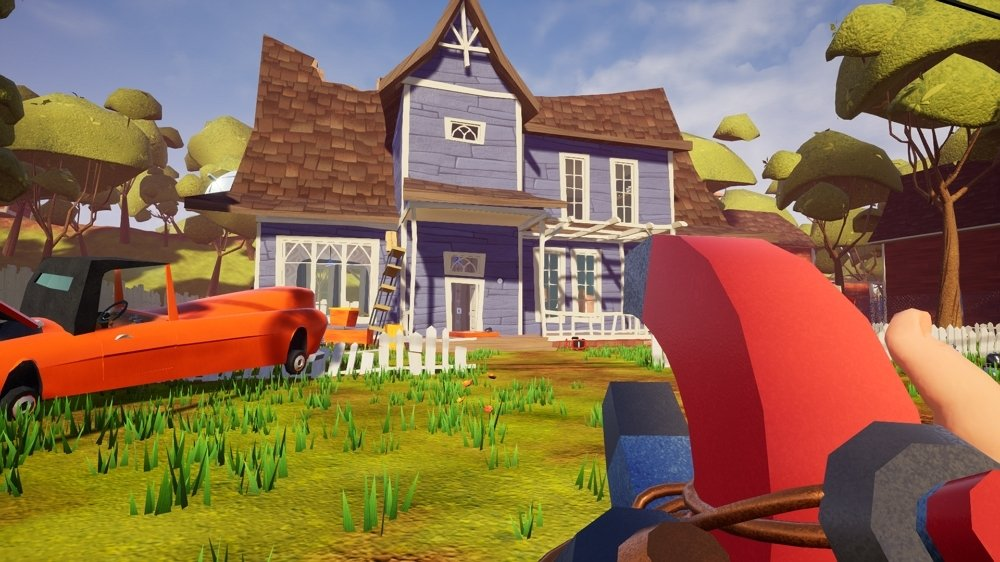
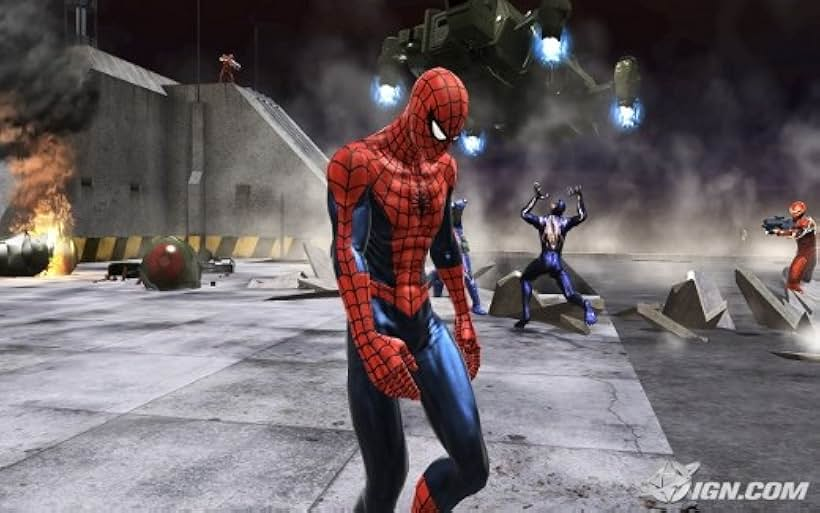

All Games
Hello Neighbor
"Hello Neighbor" is a stealth horror game developed by Dynamic Pixels
and published by tinyBuild. In the game, you play as a character who moves
into a new house and becomes suspicious of the strange behavior of your neighbor.
The goal is to sneak into the neighbor's house to uncover the secrets hidden in
their basement.The game is known for its AI system, which learns from your
actions and adapts to make it more challenging for you to sneak around.
It combines puzzle-solving with stealth and has a unique, cartoony
art style. The main objective is to avoid being caught by the
neighbor while solving puzzles to unlock different areas of the house.




|Download| |Available Links|
Torrent File(Russian)
Jujutsu Kaisen
Jujutsu Kaisen, known for its serialization in Shueisha’s “Weekly Shonen Jump”,
is getting its first console game!
In this 2 vs. 2 action game, aim for new heights by mastering the “Cursed Techniques”
of more than 15 powerful Jujutsu Sorcerers and Cursed Spirits!
Choose your partner and create unique combinations that both complement your play
style and showcase the different cursed techniques each character possesses.
Strengthen your cursed techniques through exhilarating battles, defeat your opponents,
and… domain expansion…?!


|Download| |Available Links|
Torrent File(English)
Spiderman Miles Morales
In the latest adventure in the Marvel’s Spider-Man universe,
teenager Miles Morales is adjusting to his new home while following in the
footsteps of his mentor, Peter Parker, as a new Spider-Man.
But when a fierce power struggle threatens to destroy his new home,
the aspiring hero realizes that with great power, there must also come great responsibility.
To save all of Marvel’s New York, Miles must take up the mantle of Spider-Man and own it.


|Download| |Available Links|
Torrent File(English)
Spiderman Remastered
In Marvel's Spider-Man Remastered, we meet an experienced Peter Parker
who's more masterful at fighting big crime in New York City. At the same time,
he's struggling to balance his chaotic personal life and career while the fate
of Marvel's New York rests upon his shoulders.
|Download| |Available Links|
Torrent File(English)
Spiderman web of shadows
Spider-Man: Web of Shadows is a 2008 action-adventure video game
based on the Marvel Comics character Spider-Man. The game was released
in October 2008 across multiple platforms, and encompasses three drastically
different versions: one released for Microsoft Windows,
the PlayStation 3, Wii, and Xbox 360, which features an open world and non-linear
gameplay; one for the PlayStation 2 and PlayStation Portable (titled Spider-Man: Web
of Shadows – Amazing Allies Edition), which is a 2.5D side-scrolling beat 'em up; and
one for the Nintendo DS, a Metroidvania-style beat 'em up. All three versions have several
common elements, such as moral choices that alter the narrative, the ability to summon
allies during fights, and a similar plot, despite different characters being featured.
Web of Shadows' storyline is significantly darker than most previous Spider-Man games,
as it revolves around a symbiote invasion threatening Manhattan, which Spider-Man must
stop with the help of several unlikely allies.

|Download| |Available Links|
Mediafire (english)
Mega (english)
GTA V
Players can freely explore the open world. The story is
about three protagonists: retired bank robber Michael De Santa,
street gangster Franklin Clinton, and drug dealer and gunrunner Trevor Philips.
They attempts to commit robberies while under pressure from a corrupt government
agency and powerful criminals.